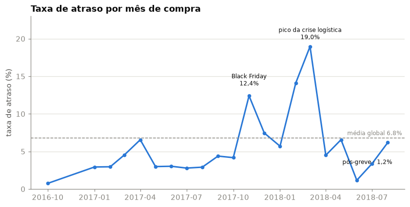
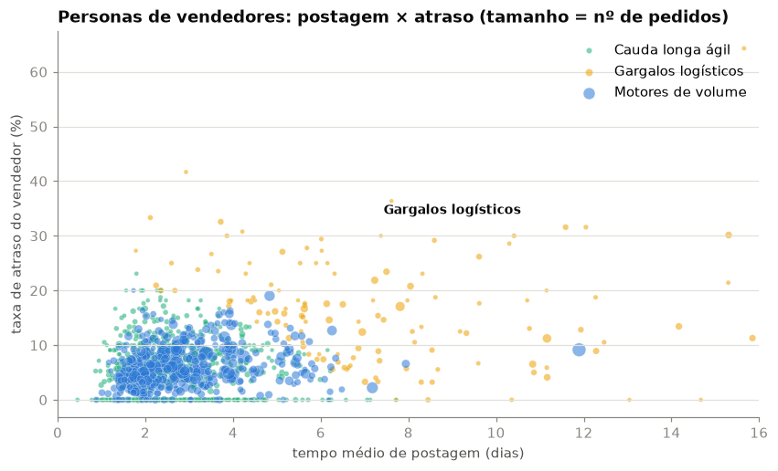
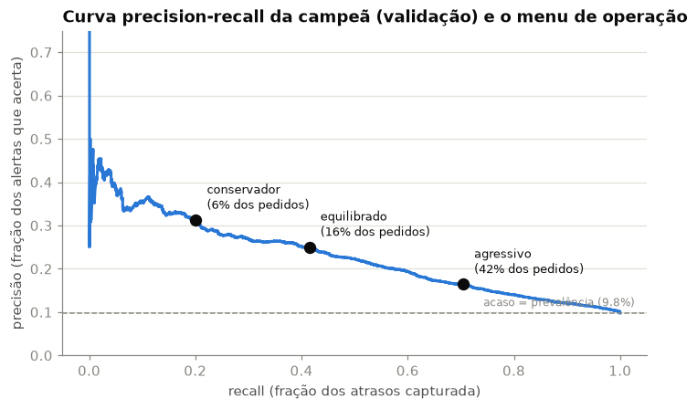
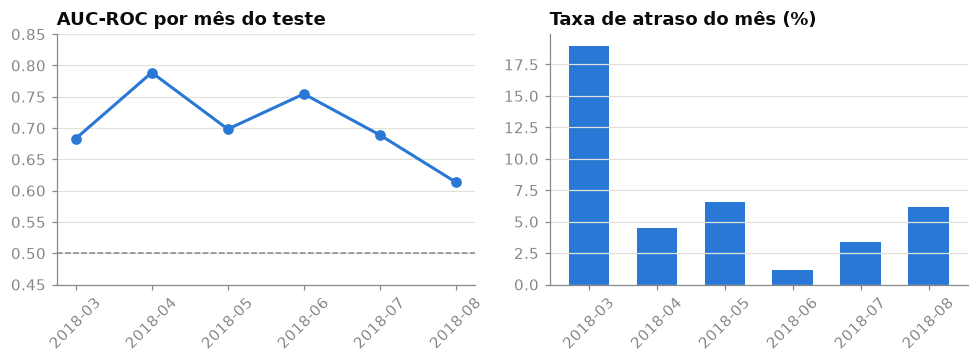

RELATÓRIO EXECUTIVO
Do dado público da Olist a um sistema de alertas proativos,
com avaliação honesta e cenário operacional em contagens
Thiago Ferreira · Julho de 2026
Código, notebooks e aplicativo interativo: github.com/tf-ferreira/olist-delivery-delay-prediction
O problema: 6,8% dos pedidos entregues do e-commerce brasileiro (dataset público Olist, 96.470 pedidos de 2016–2018) chegam depois da data prometida ao cliente. A empresa só descobre cada atraso quando ele já aconteceu, e reage apagando incêndio: reclamações, avaliações negativas e perda de recompra.
A solução construída: um modelo que estima, no instante em que a compra é concluída, a probabilidade de o pedido atrasar, usando apenas informações que existem naquele momento (endereço, promessa de prazo, atributos do produto e o histórico do vendedor até ali). A probabilidade alimenta uma política simples de operação: notificar proativamente os k% pedidos de maior risco do mês, com k escolhido pelo negócio.
Como foi avaliado: com a disciplina que produção exige. Divisão treino/teste no tempo (nunca aleatória), auditoria coluna a coluna contra vazamento de informação do futuro, e um conjunto de teste de seis meses aberto uma única vez. Os números acima são estimativas honestas de comportamento futuro, não métricas de laboratório.
A recomendação: piloto operacional de notificação proativa no ponto default (16% de orçamento de alertas), com monitoramento mensal da qualidade de ordenação e gatilho de retreino, e a evolução do modelo pela agenda de próximos passos da seção 8.
O atraso de entrega é a pior experiência do funil logístico, e é assimétrico: custa caro em reputação e recompra, mas a maioria esmagadora dos pedidos (93,2%) chega no prazo. Agir sobre todos os pedidos é caro demais; não agir sobre nenhum é o status quo reativo. O valor de um modelo de risco está exatamente no meio: concentrar a atenção operacional nos pedidos certos, antes do estouro do prazo. As ações possíveis com um score de risco no momento da compra: aviso proativo ao cliente (a expectativa gerenciada dói menos que a surpresa), priorização no fluxo de despacho, e cobrança dirigida aos vendedores de risco.
Base pública da Olist (marketplace brasileiro): 9 tabelas relacionais, ~100 mil pedidos reais de 2016 a 2018, com pedidos, itens, pagamentos, clientes, vendedores e geolocalização. A população analisada são os 96.470 pedidos entregues com data registrada; o alvo compara datas (a promessa é registrada à meia-noite, e a comparação ingênua por horário rotularia errado 1.292 pedidos entregues no próprio dia prometido).
A regra que governa o projeto: só entra no modelo o que era conhecido no instante da compra. Datas de aprovação, postagem e entrega, e as avaliações dos clientes, são posteriores e ficam banidas (auditoria coluna a coluna no repositório). A variável mais sensível, o histórico de cada vendedor, foi construída com relógios de disponibilidade: o desfecho de um pedido só entra no histórico quando aquele pedido é entregue, exatamente como uma feature store de produção veria. O contrato é verificado por testes automatizados e por um teste de sanidade: treinando com o alvo embaralhado, o desempenho desaba para o equivalente à moeda ao ar (0,500), como deve ser.
O pipeline de consolidação (9 tabelas → 1 linha por pedido) audita a contagem de linhas a cada junção e mantém valores faltantes sinalizados em vez de imputados, com as estatísticas de preenchimento aprendidas apenas no período de treino.


Três modelos foram comparados em escada de complexidade (Regressão Logística, Random Forest, LightGBM), sob um protocolo fixado antes de qualquer treino: seleção de hiperparâmetros e do campeão num bloco de validação temporal dentro do treino, e um teste de seis meses (mar–ago/2018) consultado uma única vez, ao final. A campeã selecionada foi a Regressão Logística regularizada: sob a mudança de regime entre treino e validação, o modelo simples generalizou melhor que os de maior capacidade, um resultado que um split aleatório (a prática comum) teria escondido.
| Modelo | AUC-PR no teste | vs acaso (7,0%) | AUC-ROC no teste |
|---|---|---|---|
| Regressão Logística (campeã) | 0,138 | 2,0x | 0,699 |
| LightGBM | 0,181 | 2,6x | 0,742 |
| Random Forest | 0,137 | 2,0x | 0,664 |
Transparência que importa: o LightGBM superou a campeã na passada única do teste. A troca não foi feita, porque trocar de modelo depois de ver o teste é usar o teste para selecionar, e a métrica resultante nasceria inflada. O aprendizado está registrado como evolução: seleção com validação em múltiplas janelas temporais antes de produção. Preferimos uma estimativa honesta com a incerteza documentada a uma métrica maior obtida quebrando o protocolo.
O que o modelo usa, em ordem de importância: UF de destino, janela prometida (prazos longos protegem), distância vendedor→cliente e o tempo de despacho histórico do vendedor. Tudo interpretável e alinhado aos achados da análise exploratória.
A decisão de operação não é um número estatístico, é um orçamento: quantos clientes notificar por mês. Cada orçamento corresponde a um ponto da curva de troca entre capturar atrasos e gerar alarmes falsos. Três pontos de referência, medidos no teste (mês típico de ~6,5 mil pedidos):
| Política | Notificados/mês | Atrasos capturados/mês | Falsos alarmes/mês | Precisão (vs 7% do acaso) |
|---|---|---|---|---|
| Conservadora (6%) | 409 | 74 (16% dos atrasos) | 335 | 18,1% (2,6x) |
| Default (16%) | 1.054 | 166 (36%) | 888 | 15,7% (2,2x) |
| Agressiva (42%) | 2.728 | 313 (68%) | 2.414 | 11,5% (1,6x) |

Nenhum valor monetário foi assumido neste relatório de propósito: contagens são indiscutíveis, e a conversão em dinheiro depende de dois números que pertencem ao negócio (custo de um contato proativo e custo evitado de um cliente surpreendido). Com esses dois números, a tabela acima vira uma conta de retorno imediata.

O período de teste contém, deliberadamente, três regimes distintos: a saída da crise logística (março), a greve dos caminhoneiros (maio) e a recalibração de promessas (junho em diante). A capacidade de ordenação do modelo permaneceu acima do acaso em todos (AUC-ROC de 0,61 a 0,79). O padrão do pior mês, agosto, o mais distante do treino, é a assinatura clássica de envelhecimento de modelo, e fundamenta as duas práticas recomendadas para produção: monitoramento mensal da métrica e gatilho de retreino.
Reprodutibilidade: todo o caminho, dos dados brutos a este relatório, é reproduzível a partir do repositório público (notebooks narrados, pipeline auditado, testes automatizados e ambiente com versões fixadas). O aplicativo interativo permite explorar o cenário operacional com qualquer orçamento de alertas.